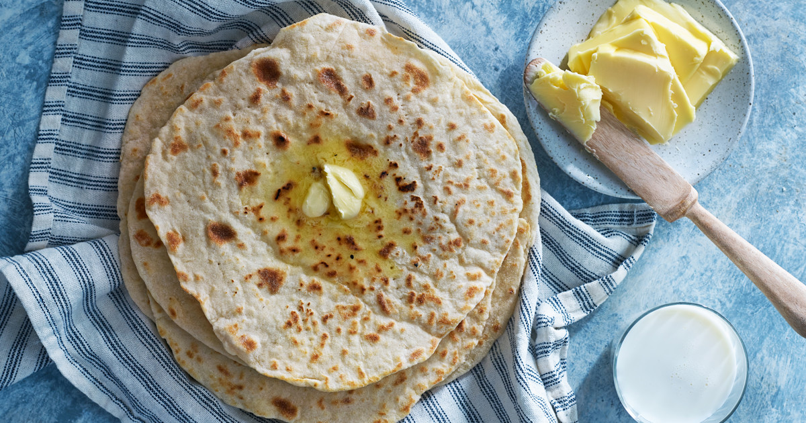

Home
Soft Scandinavian Flatbread

Description
Tunnbröd, meaning “thin bread” in Swedish, is a traditional flatbread beloved across northern Sweden and beyond.
It comes in both soft and crisp varieties, often made from a mix of wheat, barley, and sometimes rye flours, giving it a slightly earthy flavor and a tender or pleasantly crunchy texture.
Soft tunnbröd is especially popular for wrapping around fillings like cured meats, cheese, mashed potatoes, or herring, making it a staple of Swedish picnic fare and classic dishes like the tunnbrödsrulle, a wrap often filled with sausage, mashed potatoes, and shrimp salad.
The bread is typically rolled out very thin and baked on a hot griddle or in a traditional wood-fired oven, giving it a light char and rustic feel.
What makes tunnbröd particularly special is its versatility and connection to regional identity and family tradition.
Many families have their own closely-guarded recipes, passed down through generations and reflecting local preferences and ingredients.
In Sami and northern Swedish communities, it’s often associated with festive meals and gatherings, served alongside reindeer meat, lingonberry jam, or hearty stews.
Whether enjoyed fresh and pliable or crisp and dry like a cracker, tunnbröd is more than just bread—it’s a comforting link to Sweden’s cultural and culinary heritage.
Ingredients
2 cups whole wheat bread flour
1 cup barley flour
2 tsp yeast
1 tsp salt
1 tsp sugar
1 cup room temperature water
1/4 cup whole-milk yogurt
3 tbsp melted butter
Instructions
- Combine the flours, yeast, salt and sugar by hand or in a standing mixer. Stir until well-combined.
- Add the water, yogurt, and one tablespoon of the butter to the mixture. Mix by hand or turn on the standing mixer at a low speed.
- Once the mixture begins to bind, increase the mixing speed to medium and mix for about 5 more minutes, until the dough begins to come easily from the sides of the bowl.
Add a tablespoon of flour, if needed, if the dough is too sticky.
- Form the dough into a ball and place into a large greased bowl. Cover with a damp cloth and allow to sit in a warm location for about an hour until it has doubled in size.
- Divide the dough into the desired number of flatbreads. Use a floured rolling pin to roll out the dough portions into 1/4-inch-thick circles. Use a fork to poke holes all across the dough to prevent bubbling when cooked.
- Heat a skillet or pan over medium heat and grease with oil or butter. Add the dough singley to the pan and cook for one minute per side, when they develop brown spots.
- Serve immediately with your favorite spread or entree.